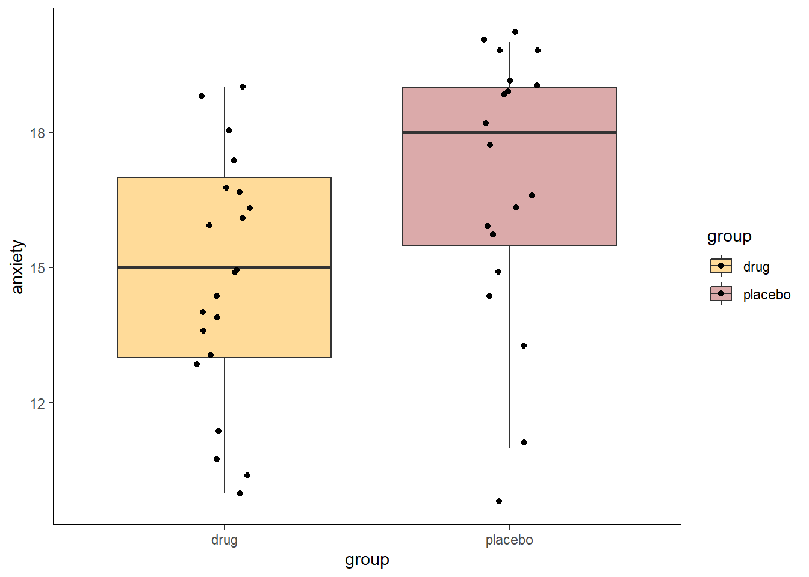
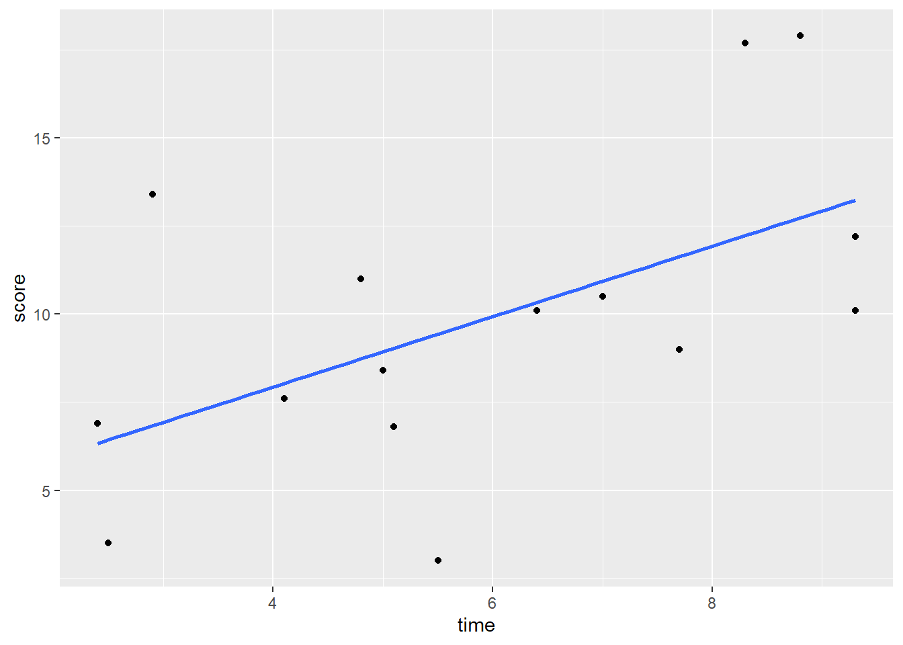
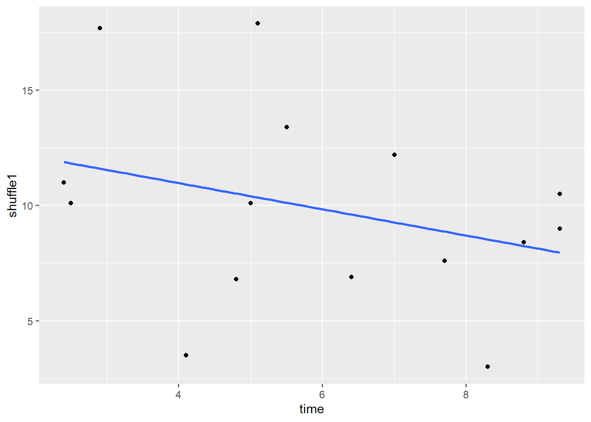

Chapter 14 Permutation Testing
Permutation tests are a type of randomization test. The theoretical difference between permutation tests and inferential tests is that with permutation tests we build the sampling distribution from the observed data, rather than inferring or assuming that a sampling distribution exist.
In practice, what a permutation test does is to take your observed data and then shuffle (or permute) part of it. After each shuffle, some aspect of the data is recalculated. That could be for instance the correlation coefficient, or it could be a difference in means between two groups. The data then get randomly reshuffled again, and the test-statistic is recalculated again. This goes on for thousands of times - for as many shuffles are deemed acceptable. This is usually a minimum of 1,000 but typically at least 10,000 shuffles are done. After all the permutations (shuffles) are performed, a distribution of the statistic of interest is generated from the permutations. This is compared to the original observed statistics (e.g. correlation coefficient, difference in group means) to see if the observed value is unusually large compared to the permuted data.
If this seems a little confusing, hopefully seeing it in action will help…
14.1 t-test Permutation
Let’s look at our two independent samples of exam scores:
library(tidyverse)
anastasia <- c(65, 74, 73, 83, 76, 65, 86, 70, 80, 55, 78, 78, 90, 77, 68)
bernadette <- c(72, 66, 71, 66, 76, 69, 79, 73, 62, 69, 68, 60, 73, 68, 67, 74, 56, 74)
# put into a dataframe:
dd <- data.frame(values = c(anastasia, bernadette),
group = c(rep("Anastasia",15), rep("Bernadette", 18))
)
dd## values group
## 1 65 Anastasia
## 2 74 Anastasia
## 3 73 Anastasia
## 4 83 Anastasia
## 5 76 Anastasia
## 6 65 Anastasia
## 7 86 Anastasia
## 8 70 Anastasia
## 9 80 Anastasia
## 10 55 Anastasia
## 11 78 Anastasia
## 12 78 Anastasia
## 13 90 Anastasia
## 14 77 Anastasia
## 15 68 Anastasia
## 16 72 Bernadette
## 17 66 Bernadette
## 18 71 Bernadette
## 19 66 Bernadette
## 20 76 Bernadette
## 21 69 Bernadette
## 22 79 Bernadette
## 23 73 Bernadette
## 24 62 Bernadette
## 25 69 Bernadette
## 26 68 Bernadette
## 27 60 Bernadette
## 28 73 Bernadette
## 29 68 Bernadette
## 30 67 Bernadette
## 31 74 Bernadette
## 32 56 Bernadette
## 33 74 BernadetteWe can plot these data as boxplots to get a sense of the within group variation as well as the observed differences between the groups:
ggplot(dd, aes(x = group, y = values, fill = group)) +
geom_boxplot(alpha=.3, outlier.shape = NA) +
geom_jitter(width=.1, size=2) +
theme_classic() +
scale_fill_manual(values = c("firebrick", "dodgerblue"))
Now, from our two independent samples, we can directly observe what the difference in sample means is. This is just calculated by subtracting one sample mean from the other:
meandif <- mean(anastasia) - mean(bernadette) # 5.48
meandif## [1] 5.477778So, from our samples, we observed a difference in grades of 5.48 between the groups. Typically, we would run an independent t-test to test whether these two samples came from theoretical populations that differ in their means:
t.test(anastasia, bernadette, var.equal = T)##
## Two Sample t-test
##
## data: anastasia and bernadette
## t = 2.1154, df = 31, p-value = 0.04253
## alternative hypothesis: true difference in means is not equal to 0
## 95 percent confidence interval:
## 0.1965873 10.7589683
## sample estimates:
## mean of x mean of y
## 74.53333 69.05556This Student’s t-test (notice var.equal=T) suggests that this is a significant difference, meaning that the groups do differ in their population means.
However, this test relies on several assumptions (see section 11.7). Instead, we could apply a permutation test that is free of assumptions.
Essentially what we are going to do is ask how surprising it was to get a difference of 5.48 given our real data. Put another way, if we shuffled the data into different groups of 15 and 18 (the respective sample sizes of Anastasia and Bernadette), would we get a difference in sample means of greater or lower than 5.48? If we did this thousands of times, how many times would we get differences in sample means above 5.48?
Let’s apply this theory to just one permutation.
First, we combine all the data:
set.seed(1) # just to keep the random number generator the same for all of us
allscores <- c(anastasia, bernadette)
allscores## [1] 65 74 73 83 76 65 86 70 80 55 78 78 90 77 68 72 66 71 66 76 69 79 73 62 69
## [26] 68 60 73 68 67 74 56 74Next, we shuffle them into new groups of 15 and 18.:
x <- split(sample(allscores), rep(1:2, c(15,18)))
x## $`1`
## [1] 83 86 65 74 68 73 78 77 71 66 74 69 79 55 68
##
## $`2`
## [1] 76 56 80 68 76 62 72 78 90 69 67 70 65 73 74 73 60 66We have two brand new samples that contain all of the scores from our original data, but they’ve just been shuffled around. We could look at what the difference in sample means is between these two new samples:
x[[1]] # this is our shuffled sample of size 15## [1] 83 86 65 74 68 73 78 77 71 66 74 69 79 55 68x[[2]] # this is our shuffled sample of size 18## [1] 76 56 80 68 76 62 72 78 90 69 67 70 65 73 74 73 60 66mean(x[[1]]) # mean of the new sample of size 15## [1] 72.4mean(x[[2]]) # mean of the new sample of size 18## [1] 70.83333# what's the difference in their means?
mean(x[[1]]) - mean(x[[2]]) ## [1] 1.566667The difference in sample means is 1.57, which is a lot smaller than our original difference in sample means.
Let’s do this same process 10,000 times! Don’t worry too much about the details of the code. What we are doing is the above process, just putting it in a loop and asking it to do it 10,000 times. We save all the results in an object called results.
results<-vector('list',10000)
for(i in 1:10000){
x <- split(sample(allscores), rep(1:2, c(15,18)))
results[[i]]<-mean(x[[1]]) - mean(x[[2]])
}
head(unlist(results)) # these are all our mean differences from 10,000 shuffles of the data. We're just looking at the first 6.## [1] -4.0555556 4.7444444 -2.3444444 -0.3888889 1.6888889 -6.7444444We can actually make a histogram showing the distribution of these differences in sample means.
df <- data.frame(difs = unlist(results))
ggplot(df, aes(x=difs)) +
geom_histogram(color="black", fill="green", alpha=.4) +
geom_vline(color="navy",lwd=1,lty=2,xintercept = 5.48) +
theme_classic()+
ggtitle("Mean Differences from \n 10000 Permutations of Raw Data")
This histogram shows that for some of our 10,000 shuffles, we actually got some differences between our two samples of higher than 5.48 (the dotted blue line), but the vast majority of shuffles led to samples that had mean differences lower than 5.48. In fact, several shuffles led to samples where the sample of size 18 (Bernadette in the original data) had a sample mean that was higher than the sample of size 15 (Anastasia in the original data).
We can directly calculate how many times out of 10,000 shuffles we got a difference in sample means that was greater than 5.48
sum(unlist(results) > 5.48) # 202 times out of 10000## [1] 202To convert this to a p-value, we simply divide this value by the number of shuffles we ran - which was 10,000.
sum(unlist(results) > 5.48) /10000 # which is 0.0202 proportion of the time## [1] 0.0202So our p-value is p=0.0202 which is similar to a one-tailed p-value. If we wished to have a 2-tailed p-value we would simply multiply this value by 2:
# 2-tailed value
2 * (sum(unlist(results) > 5.48) /10000)## [1] 0.0404Example 2:
Let’s take a look at a second example. Here, we have various subjects rating their anxiety levels. They do this after either taking a new anxiolytic drug or a placebo. The subjects in each group are independent of each other. The placebo group has 19 subjects and the drug group has 21 subjects.
The data:
placebo <- c(15, 16, 19, 19, 17, 20, 18, 14, 18, 20, 20, 20, 13, 11, 16, 19, 19, 16, 10)
drug <- c(15, 15, 16, 13, 11, 19, 17, 17, 11, 14, 10, 18, 19, 14, 13, 16, 16, 17, 14, 10, 14)
length(placebo) #19## [1] 19length(drug) #21## [1] 21If we were interested in doing a Student’s t-test, we might want to check whether the data are approximately normal. We could perform Shapiro-Wilk tests to do this:
shapiro.test(drug) # approximately normal as p>.05##
## Shapiro-Wilk normality test
##
## data: drug
## W = 0.95184, p-value = 0.3688shapiro.test(placebo) # not enough evidence to be normal as p<.05##
## Shapiro-Wilk normality test
##
## data: placebo
## W = 0.88372, p-value = 0.02494From this we find that the placebo group is not approximately normally distributed (p value of the Shapiro-Wilk test is <.05). We could do a non-parametric test such as Wilcoxon Ranked Sum test (see xxx.xxx), but an alternative strategy is to perform a permutation test.
Let’s first plot the data, and then look at our observed difference in anxiety scores between our two independent samples:
# put into dataframe - long format
ddf <- data.frame(anxiety = c(placebo, drug),
group = c(rep("placebo", length(placebo)),
rep("drug", length(drug))
)
)
head(ddf)## anxiety group
## 1 15 placebo
## 2 16 placebo
## 3 19 placebo
## 4 19 placebo
## 5 17 placebo
## 6 20 placebo#boxplots
ggplot(ddf, aes(x=group, y=anxiety, fill=group)) +
geom_boxplot(outlier.shape = NA, alpha=.4) +
geom_jitter(width=.1) +
theme_classic() +
scale_fill_manual(values=c("orange", "brown"))
mean(placebo) - mean(drug) #2.128## [1] 2.12782So our observed difference in sample means is 2.128. In the permutation test, what we’ll do is shuffle all the scores randomly between the two groups, creating new samples of the same size (19 and 21). Then we’ll see what difference in sample means we get from those shuffled groups. We’ll also do this 10,000 times.
allvalues <- c(placebo, drug)
results<-vector('list',10000)
for(i in 1:10000){
x <- split(sample(allvalues), rep(1:2, c(19,21)))
results[[i]]<-mean(x[[1]]) - mean(x[[2]])
}
head(unlist(results)) # these are the first six of all our mean differences from 10,000 shuffles of the data.## [1] 1.1253133 0.7243108 -0.5789474 -0.6791980 0.5238095 1.7268170Let’s plot the distribution of these data to see what proportion of times our shuffled groups got samples that were greater than 2.128.
df0 <- data.frame(difs = unlist(results))
ggplot(df0, aes(x=difs)) +
geom_histogram(color="black", fill="pink", alpha=.4) +
geom_vline(color="navy",lwd=1,lty=2,xintercept = 2.128) +
theme_classic()+
ggtitle("Mean Differences from \n 10000 Permutations of Raw Data")
It looks like very few times did we get two samples that had differences in sample means that were greater than 2.128. We can calculate exactly how many times, and express this as the proportion of times we got a difference in sample means greater than 2.128:
sum(unlist(results) > 2.128) # 116 times out of 10000## [1] 116sum(unlist(results) > 2.128) /10000 # which is 0.0116 proportion of the time## [1] 0.0116So, in this case we can say that the probability of getting a difference in sample means between the drug and placebo groups that was larger than our observed difference of 2.128 was p = 0.0116. This is very strong evidence that the observed difference is significantly greater than we’d expect by chance.
14.2 Correlation Coefficient Permutation Tests
You can apply the logic of permutation tests to almost any statistical test. Let’s look at an example for Pearson correlations.
In these data, we are looking at 15 subjects who are completing a task. We measured the time they spent on the task and their high scores.
library(tidyverse)
df <- read_csv("data/timescore.csv")
head(df)## # A tibble: 6 x 3
## subject time score
## <chr> <dbl> <dbl>
## 1 1A 5.5 3
## 2 2B 2.4 6.9
## 3 3C 8.8 17.9
## 4 4D 7 10.5
## 5 5E 9.3 12.2
## 6 6F 2.5 3.5If we make a scatterplot of the data, we can see that those who spent longer on the task tended to get higher scores:
# scatterplot
ggplot(df, aes(x = time, y = score)) +
geom_point() +
stat_smooth(method = "lm", se=F)
Using a standard approach, we could find the correlation of these two variables and run a significance test using cor.test(). We can see that there is a moderate Pearson’s r of r=0.55 which is statistically significant (p=0.031).
# regular significance test
cor.test(df$time,df$score) #r=0.55, p=0.031##
## Pearson's product-moment correlation
##
## data: df$time and df$score
## t = 2.4258, df = 13, p-value = 0.03057
## alternative hypothesis: true correlation is not equal to 0
## 95 percent confidence interval:
## 0.0643515 0.8324385
## sample estimates:
## cor
## 0.5582129We could take an alternative tack, and decide to do a permutation test. The idea here is again, how surprising is it to get a correlation of 0.55 with these data? Were there other ways of ordering the x and y variables to get higher correlation coefficients?
Let’s look at our y axis variable, the score:
set.seed(1) # just doing this so all our results look same
df$score # actual data in order## [1] 3.0 6.9 17.9 10.5 12.2 3.5 11.0 7.6 8.4 13.4 10.1 9.0 10.1 17.7 6.8This is the original order of the data. If we use sample() we can shuffle the data:
sample(df$score) # actual data but order shuffled## [1] 8.4 10.5 11.0 3.0 6.9 10.1 10.1 17.9 7.6 9.0 12.2 3.5 6.8 13.4 17.7Let’s shuffle the score again, but this time store it in the original dataframe:
df$shuffle1 <- sample(df$score) #create a new column with shuffled data
df## # A tibble: 15 x 4
## subject time score shuffle1
## <chr> <dbl> <dbl> <dbl>
## 1 1A 5.5 3 13.4
## 2 2B 2.4 6.9 11
## 3 3C 8.8 17.9 8.4
## 4 4D 7 10.5 12.2
## 5 5E 9.3 12.2 9
## 6 6F 2.5 3.5 10.1
## 7 7G 4.8 11 6.8
## 8 8H 4.1 7.6 3.5
## 9 9I 5 8.4 10.1
## 10 10J 2.9 13.4 17.7
## 11 11K 6.4 10.1 6.9
## 12 12L 7.7 9 7.6
## 13 13M 9.3 10.1 10.5
## 14 14N 8.3 17.7 3
## 15 15O 5.1 6.8 17.9If we plot this shuffled y (score) against the original x (time), we now get this scatterplot, which shows a slight negative relationship:
# this is what that new column looks like:
ggplot(df, aes(x = time, y = shuffle1)) +
geom_point() +
stat_smooth(method = "lm", se=F)
And the correlation for this new scatterplot is r = -0.32:
cor.test(df$time, df$shuffle1) # now relationship is a bit negative##
## Pearson's product-moment correlation
##
## data: df$time and df$shuffle1
## t = -1.2077, df = 13, p-value = 0.2487
## alternative hypothesis: true correlation is not equal to 0
## 95 percent confidence interval:
## -0.7137421 0.2324852
## sample estimates:
## cor
## -0.317602We could shuffle the score variable even more times, and directly calculate the r value against the time variable for each shuffle using cor().
# we can do this many times
cor(df$time, sample(df$score))## [1] 0.1600023cor(df$time, sample(df$score)) ## [1] -0.1238816cor(df$time, sample(df$score)) ## [1] 0.3472331cor(df$time, sample(df$score)) ## [1] 0.04201647As you can see, the more shuffles we do, we get varied values of r. What we really should do is perform 10,000 (or another really high number) shuffles of the score variable and re-calculate r against the time variable for all 10,000 of these shuffles. Don’t worry about the code below, but that’s exactly what we’re doing. We’re saving the r values from the 10,000 shuffles in the object called results.
results <- vector('list',10000)
for(i in 1:10000){
results[[i]] <- cor(df$time, sample(df$score))
}
head(unlist(results)) # this are the correlations for the first 6 of 10,000 shuffles## [1] -0.05905503 0.14874908 -0.25029004 0.10780960 -0.03206121 -0.49661730We can plot the results in a histogram, and also put a vertical line at 0.56 which was our original observed correlation between time and score from the raw unshuffled data.
results.df <- data.frame(x = unlist(results))
ggplot(results.df, aes(x)) +
geom_histogram(color="darkgreen",fill="lightseagreen") +
geom_vline(xintercept = 0.56, lwd=1, lty=2) +
xlab("r") 
As you can see, there were a few shuffles (or permutations) that we got an r value of greater than 0.56, but not that many. In fact, we can directly calculate how many:
sum(unlist(results) > 0.56) #130 were greater.## [1] 130It turns out that 163 times out of 10,000 shuffles we got a r value of greater than 0.56. WE could calculate this as a proportion by dividing by 10,000:
sum(unlist(results) > 0.56) / 10000 #0.013## [1] 0.013We can use this value as our p-value. Because it is relatively low, we could argue that we were very unlikely by chance alone to have got a r value of 0.56 from our data. This suggests that the correlation between time and score is significant.
The advantages of running a permutation test is that it is free of the assumptions of normality for the Pearson’s r correlation significance test. It’s also a cool method, and pretty intuitive.
14.3 Permutation test for a Paired t-test
We can apply the same principle of permutation to the paired t-test. Remember, essentially the paired t-test is focused on performing a one-sample t-test on the difference in scores between the paired data - testing whether the mean of the differences could potentially come from a population with \(\mu=0\).
Let’s look at the following data that record scores for the same individual over two time points - ‘before’ and ‘after’.
# take a look at these before and after scores
ba <- read_csv("data/beforeafter1.csv")
head(ba)## # A tibble: 6 x 3
## id before after
## <chr> <dbl> <dbl>
## 1 mc 5.5 5.3
## 2 ma 5.7 5.3
## 3 co 4.4 3.3
## 4 kj 3.4 3.1
## 5 ln 5.3 5.3
## 6 oe 5.2 5.1We could plot these data using a scatterplot to examine the overall trend of how scores change from before to after:
# make a scatterplot with the x being 'before' and y being 'after'
ggplot(ba, aes(x=before, y=after)) +
geom_point() +
theme_classic()+
geom_abline(intercept =0 , slope = 1) +
xlim(2,8)+
ylim(2,8)
As most of these points are below the diagonal line, this seems to suggest that the scores for the ‘before’ data seem to be lower on the whole than the scores for the ‘above’ data.
Typically, we would run a paired t-test with such data to examine if there was a difference:
t.test(ba$before, ba$after, paired=T)##
## Paired t-test
##
## data: ba$before and ba$after
## t = 2.6667, df = 10, p-value = 0.02363
## alternative hypothesis: true difference in means is not equal to 0
## 95 percent confidence interval:
## 0.1315583 1.4684417
## sample estimates:
## mean of the differences
## 0.8This suggests that there is a significant difference p<.05 with the 95% confidence interval of the true difference in means being between 0.13 and 1.47. However, the paired t-test assumes that the data are from an approximately normal distribution. In particular, that the differences scores (the difference between the ‘before’ and ‘after’ scores for each individual) are normally distributed. We can check that using a Shapiro-Wilk test:
# create a difference column for the difference between before and after
ba$difference <- ba$before - ba$after
# run a Shapiro test on the difference column
shapiro.test(ba$difference)##
## Shapiro-Wilk normality test
##
## data: ba$difference
## W = 0.82621, p-value = 0.02081With the p-value here being p<.05, this suggests that our data are not normally distributed. One option would be to do a non-parametric Wilcoxon-signed rank test (see section 11.12). Alternatively, we could do a permutation test.
Let’s look at our data again, and focus on the difference column.
ba## # A tibble: 11 x 4
## id before after difference
## <chr> <dbl> <dbl> <dbl>
## 1 mc 5.5 5.3 0.200
## 2 ma 5.7 5.3 0.400
## 3 co 4.4 3.3 1.10
## 4 kj 3.4 3.1 0.300
## 5 ln 5.3 5.3 0
## 6 oe 5.2 5.1 0.100
## 7 mb 3.4 3 0.4
## 8 dc 7.5 5 2.5
## 9 dg 3.4 2.1 1.3
## 10 mj 6.6 3.9 2.7
## 11 kb 5 5.2 -0.200Our observed mean for the differences scores is 0.8.
mean(ba$difference)## [1] 0.8How likely were we to get this mean difference if our ‘before’ and ‘after’ conditions were randomized? For example, for individual ‘mj’, their before score was 6.6 and after was 3.9 leading to a difference of 2.7. But what if their before and after were switched? Then the difference score would be -2.7. What we would like to do, is to randomly flip the before and after columns for each individual and recalculate the difference scores. Each time we do this, we will calculate the mean of the difference scores. A programmatic shortcut to doing this is to multiple each difference score randomly by either +1 or -1. Here is the first shuffle we could perform:
set.seed(1)
shuffle1 <- ba$difference * sample(c(-1,1), 11, replace = T)
shuffle1## [1] -0.2 0.4 -1.1 -0.3 0.0 -0.1 -0.4 -2.5 1.3 2.7 0.2mean(shuffle1)## [1] -8.07361e-17In this example, the ‘before’ and ‘after’ scores were randomly flipped for individuals ‘mc’, ‘ma’, ‘mj’ and ‘kb’. Let’s do a second shuffle:
shuffle2 <- ba$difference * sample(c(-1,1), 11, replace = T)
shuffle2## [1] -0.2 -0.4 -1.1 -0.3 0.0 0.1 0.4 2.5 -1.3 -2.7 0.2mean(shuffle2)## [1] -0.2545455In this example, the ‘before’ and ‘after’ scores were randomly flipped for individuals ‘mc’, ‘co’, ‘kj’, ‘oe’, ‘mb’, ‘dg’ and ‘mj’. In both shuffles the mean of the difference scores was less than our observed mean of 0.8.
We can put this into a loop to do it 10,000 times:
results <- vector('list',10000)
for(i in 1:10000){
results[[i]] <- mean(ba$difference * sample(c(-1,1), 11, replace = T))
}And we can plot these results as a histogram:
df1 <- data.frame(difs = unlist(results))
ggplot(df1, aes(x=difs)) +
geom_histogram(color="black", fill="pink", alpha=.4, binwidth = .05) +
geom_vline(color="navy",lwd=1,lty=2,xintercept = .8) +
theme_classic()+
ggtitle("Mean Differences from \n 10000 Permutations of Raw Data")
We can also calculate the number of times out of 10,000 that we observed a mean difference higher than the mean of 0.8 in our original data, which is only in 19 shuffles out fo 10,000:
sum(unlist(results)>0.8)## [1] 16We divide this number by 10,000 to get our p-value:
sum(unlist(results)>0.8) / 10000## [1] 0.0016This suggests that we have a highly significant p=0.002 difference between our ‘before’ and ‘after’ data within subjects.
14.4 Permutation tests in Packages
Above we wrote script from scratch to perform our permutation tests. In many ways, this is our preferred approach as it is more customizable. However, in some packages there are some permutation tests already available as functions. One example is the independence_test from the package coin that will do a permutation t-test for between subjects. The code for this is below (this requires dataframes to be in the long format):
library(coin)## Loading required package: survivalhead(ddf)## anxiety group
## 1 15 placebo
## 2 16 placebo
## 3 19 placebo
## 4 19 placebo
## 5 17 placebo
## 6 20 placebo# for some reason, the coin package makes you make the 'group' column/variable a factor
ddf$group <- factor(ddf$group)
independence_test(anxiety ~ group, data = ddf, alternative = "less")##
## Asymptotic General Independence Test
##
## data: anxiety by group (drug, placebo)
## Z = -2.1998, p-value = 0.01391
## alternative hypothesis: lessAs you can see, this gives a roughly similar result to our own permutation script.
You can also do a 2-tailed version:
#2-tailed permutation test
independence_test(anxiety ~ group, data = ddf)##
## Asymptotic General Independence Test
##
## data: anxiety by group (drug, placebo)
## Z = -2.1998, p-value = 0.02782
## alternative hypothesis: two.sided